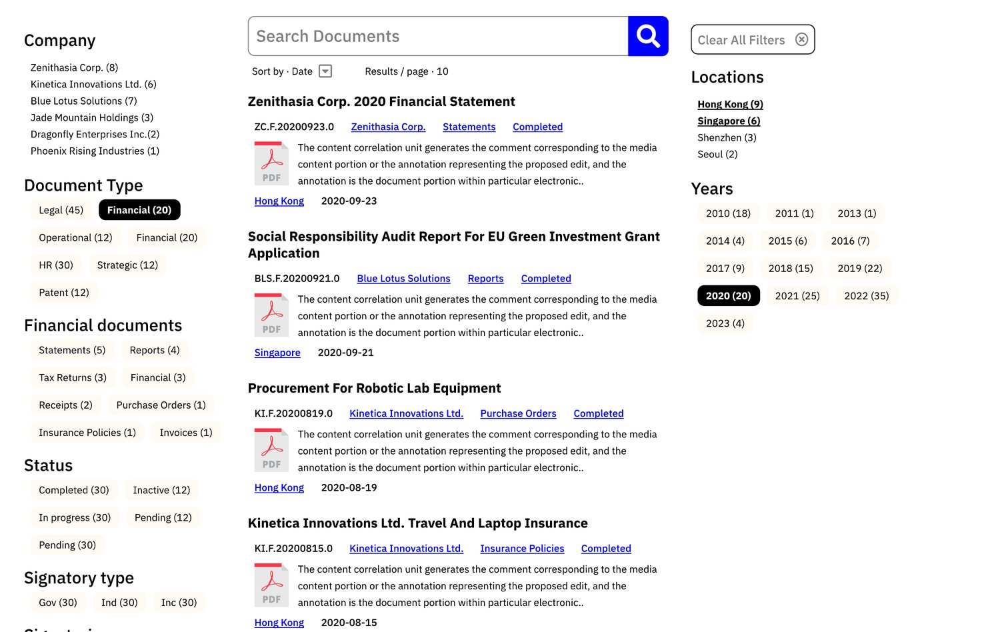
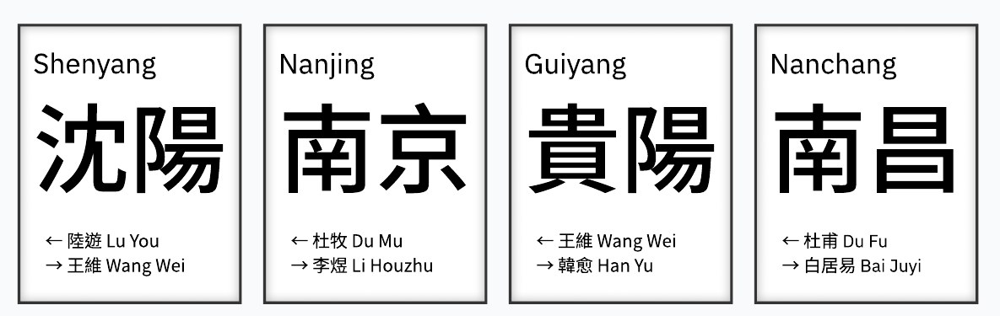
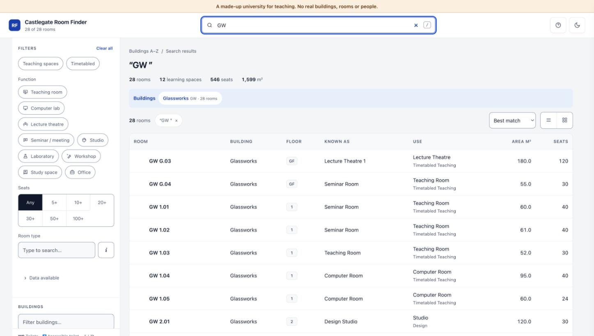

Mike Oustamanolakis, PhD
For leadership teams in Hong Kong, mainland China and the UK, when an organisation’s information, rules or services no longer fit the people who use them.

Group of companies · Greater China A failing programme back on track, and 15–20 hours a week down to two Six contributors, four jurisdictions, one way to file and find everything. Read the case →
Manufacturing · China Two factory campuses anyone can find their way around, delivered in half the time Agreed in two months, delivered in one, then extended by the client. Read the case →
Higher education · UK 15,000 rooms, one answer An estate’s scattered records joined into one search, with their contradictions listed. Read the case →Client names are withheld. Figures are measured, or marked as estimates; where there is no figure, none is given.